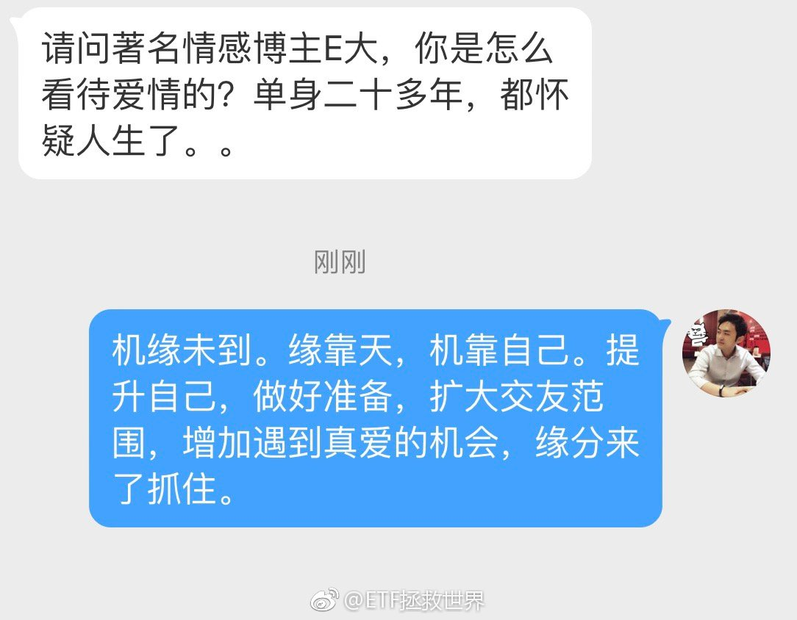

回复@HU傻胖:不知道你用笔电是干嘛用的。我用过的笔记本也算多了，mac pro，IBM，华硕，sony……然而我现在最喜欢用的居然是surface。如果不是它的平板模式真的有点差，简直值得推荐。当然，即使不是平板模式，也不适合玩游戏//@HU傻胖:请教各位，手提电脑，买哪个好一点@ETF拯救世界:大道相通 
回复@ETF漂洋过海来看你:对。但是去年柳叶刀有篇论文，说84.6%的喷子*生活不协调。所以单身与否不是关键，关键是很痛苦的孤老终生…//@ETF漂洋过海来看你:喷子未必单身呢，施主…//@ETF拯救世界:还有一条忘了说，不要在网上做喷子，否则孤老一生。@ETF拯救世界:大道相通


 //@ETF拯救世界:还有一条忘了说，不要在网上做喷子，否则孤老一生。
//@ETF拯救世界:还有一条忘了说，不要在网上做喷子，否则孤老一生。